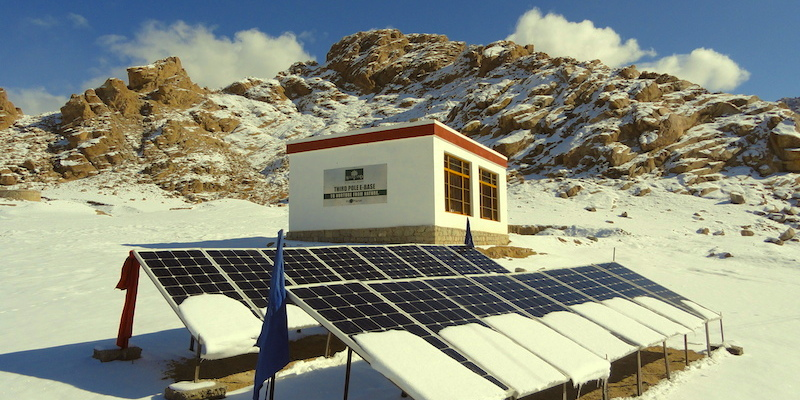
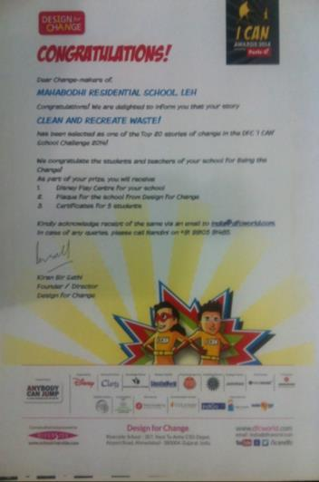
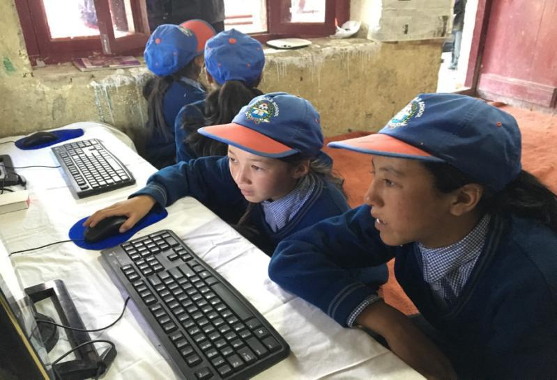

Bounded by high mountains on all sides, Ladakh is one of the most remote regions of India. It is classified by
geographers as high-altitude desert, and with settlements ranging from altitudes of 8,000 to 12,000 feet,
it is often described as a “hostile environment.” Yet Ladakh has for many centuries been host to thriving
communities of small farmers and pastoralists, including families that have been cultivating the same patches
of land for over 600 years, and nomadic herders on the Changthang plains near the border with Tibet. Majority
of the Ladakhi people live in villages that are scattered in between the high mountains and most of these
villages lack proper transport, communication, education and other basic facilities like medicine. Illiteracy
and ignorance has been the bane of these simple folk for ages. With the development of Leh town and the villages,
education also gained importance however there are still many problems caused by a gap in what is written
versus what the students see. The examples used in the textbooks have no connect to the local community and
students find it difficult to grasp the concepts which are not related to their community. The teachers are
also not well trained and this limits their capabilities to fully tap into the potential of the young minds.
GHE is working on two primary focus areas promoting access to Experiential Education for the remote mountain
communities.
- Provide Experiential Education to school Students with Hands on Project
- Setup Solar Based advanced Himalayan Innovation Centres
Himalayan Innovation Centres: HIC are being setup in the rural areas, where students from different villages come together
at one central village and access knowledge that opens up their minds to a world of possibilities. This is
achieved through innovation in technology by which GHE is able to provide these remote children access to
offline internet.

Third Pole Education Base was setup by GHE in 2013 at 12000 ft In Leh, with the intent to provide interactive and experiential
learning for the students of Ladakh. students who come to the Leh city from all the different villages, and
to expand their learning horizon beyond the textbooks through practical hands on experimental knowledge and
through connecting with the outside world via internet. 500 students of Leh now use the E-Base as part of
their curriculum, focusing on education, based on sustainable solutions around clean energy, waste management,
water conservation, bio-diversity and local Ladakhi culture & traditions. The projects done by the students
at the EBase have won the Design for Change Award for two years in a row in 2014 and 2015, competing against
2500 different schools from all over India and winning the coveted ‘I CAN’ Award.

The Third Pole Education Base has ignited a passion within the students to take up careers in arts, science, engineering
and move away from the traditional approach of being in the tourism industry. There has been an increase
in the overall skill development of the students
- Impacted 800+ Students through Hands on project on themes of sustainability
- Five E- Base fellows have volunteered at E-Base for last 3 years
- Won Design for Change Award in 2014 & 2015 among 2500 Indian schools
- Indian Universities offering Engineering Seats for meritorious students from E-Base for Higher Education
In 2016, GHE focused on setting up Innovation Centres in Ladakh powered by Solar Technology. The centres have been set up
in rural schools that have no mobile and internet connectivity. These centres are setup with the aim of promoting
digital literacy among the village students. GHE has introduced Linux/windows OS based low power computers
(<12W) with energy efficient LED monitors and satellite connection for internet access. The Himalayan
Innovation Centres comprise on average six fully fledged systems that require less than 150W of power for
10 hours of operation. This is a perfect demonstration of how a high-performance energy efficient system
can provide digital education for remote schools and it has had a hugely motivating impact on the students.

Key Facts about the Himalayan Innovation Center
- A 250W Setup operating 5 full-fledged Computer systems
- Focused information sharing with Students and access to world knowledge that can be updated regularly
- Promoting Use of Energy Efficiency among Academia
- Maintained and Scalable by school Administration
GHE plan to setup 30 Innovation Centres across the Himalayas and also work on developing customized educational content for
these remote communities, in order to preserve their rich traditions and cultural heritage, while at the
same time keeping them upto date on actions around the world!
include "footer.html"
include "scripts.html"